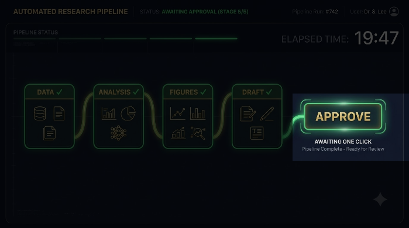

CHAPTER 3 · AUTOMATED RESEARCH PIPELINE
그리고, 우리 — 승인만 하는 연구자

발표 첫머리의 그 화면 — 몇 달 뒤, 불은 꺼지고 승인 버튼만 남았다
ELAPSED TIME 00:00 | PIPELINE RUNNING
APPROVE
AWAITING ONE CLICK
In-the-Loop (질문·검증)→
On-the-Loop (모니터링)→
Out-of-the-Loop (승인 거수기)
처음에는 이용했다. 이제는 승인만 한다.In → On → Out — 루프 밖으로 미끄러지는 것은 라이더만이 아니다